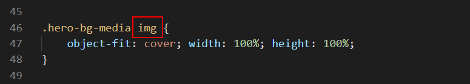
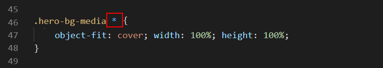

Learning Goals
At the end of this Tutorial, you will be able to:
- Add a background video with a pre-loading still image to the hero block in a web page.
You can view the finished version of the sample web page you will update in this Tutorial by clicking the image below. The finished sample will open in a new tab of your web browser.

About hero blocks with background videos
As Internet connection speeds grow faster and faster, hero blocks and other elements on web pages are increasingly using background videos. These are short videos of about 10 seconds that play in a continuous loop.
See the examples below.
Not all users enjoy fast Internet connection speeds, however. So it is good practice to include a background image that displays until the video finishes downloading.
Here are some sources of free videos you can use as backgrounds:
Working with your sample files
In this Tutorial, you will update a copy of the sample web page and stylesheet you worked with in the previous Hero Blocks with Images Tutorial.
- In VS Code, open the hero-image.html web page and save it with the new name of hero-video.html.
- Open the hero-image.css stylesheet and save it with the new name of hero-video.css.
- In the new hero-video.html file, edit the name of the linked stylesheet from hero-image.css to hero-video.css, and save the web page.
- Replace the current title and description details with the following:
<title>Hero Block with Video</title> <meta name="description" content="A hero block with a background video that plays in a continuous loop and includes a tinted overlay.">
- Finally, create a new sub-folder in your exercises/assets folder named videos and save the following image to it:
 hero-still.jpg
hero-still.jpg
Downloading the background video
Your next action is to download a free-to-use video from the Pexels website.
- Click the link below to open a new web browser tab that offers a video for download. Girl Writing on Her Notebook
- At the top right of the screen, click the arrow at the right of the Free Download button.

- For the video resolution, click the Original (1920 x 1080) option.
 And then click the Free Download button.
And then click the Free Download button. - Copy the downloaded video to your websites/exercises/assets/videos sub-folder.
- As a final step, rename the video file from Pexels Videos 2086113.mp4 to hero-video.mp4.

You are now ready to work with the downloaded and renamed video.
Adding the background video
Follow these steps to embed the video file in your web page.
- In VS Code, display the hero-video.html file.
- Replace the entire hero-bg-media block with the following.
<div class="hero-bg-media"> <video loop muted autoplay poster="assets/videos/hero-still.jpg" class="background-video"> <source src="assets/videos/hero-video.mp4" type="video/mp4"> </video> </div>
- In the head of the web page, change the name and location of the preload image from assets/img/business.jpg to assets/videos/hero-still.jpg.
- Change the text of the page to the following, and save the page.
<h1 class="slide-in-top">Education for Life</h1> <h2 class="slide-in-left">A brighter career and future</h2>
- In the hero-video.css file, update the background-image style rule of the .bg-overlay selector as follows, and save the stylesheet.
background-image: linear-gradient(rgba(29,38,113,0.7),rgba(195,55,100,0.3));
- The overlay colour changes from blue (RGB of 29,38,113) at the top to brown (RGB of 195,55,100) at the bottom.
- The opacity of the overlay, represented by the letter A (for Alpha channel) decreases from 0.7 at the top to 0.3 at the bottom.
Playing a background video on Apple iPhones and iPads
To get your background video to play on Apple mobile and tablet devices, you will need to add a few more attributes to the opening video tag in the hero block of your web page.
Without these extra attributes, your opening video tag looks like this:
<video loop muted autoplay poster="assets/videos/hero-still.jpg" class="background-video">
For Apple devices, you will need to add some new attributes as follows:
<video loop playsinline muted autoplay poster="assets/videos/hero-still.jpg" class="background-video" disablepictureinpicture preload="auto">
As you can see, the new attributes of the opening video tag are: playsinline, disablepictureinpicture and preload="auto".
You can copy-and-paste the above into your hero-video.html web page, to replace the code already there.
Your code for embedding the video file and poster image will now look as shown below.

Updating the stylesheet for videos
In the hero-video.css file, you can see that the style rules set for a child element of the hero-bg-media container apply only if that child is an image.
This needs to be updated as follows, so that the style rules apply to all child elements of hero-bg-media, including both image and video files.
Replace the specific img selector with the wildcard * selector as shown below.
When finished, save the hero-video.css stylesheet.
✅ That’s it. You have now successfully completed this Tutorial.
Click hero-video.html to view a finished sample of this web page in a new tab of your web browser.
Updating your website home page
Now that you have updated and styled a new web page, let’s add a hyperlink to it on the ‘home page’ of your web site. Follow the steps below:
- In VS Code, open this HTML file in your ‘main’ websites folder: index.html
- Copy-and-paste the following new line to your web page at end of current list of web pages.
<p><a href="exercises/hero-video.html">Hero block with background video</a></p>
Save your index.html web page and view the result in your browser.
Uploading your files to GitHub
After finishing your web page and stylesheet, you are now ready to upload them to your account on GitHub.
- Open a new tab in your web browser and go to GitHub.com. If you are not already signed in to your GitHub account, sign in now.

- On your GitHub home page, click the ‘repo’ that holds your web pages. Its name will look as follows, where username is your chosen username on GitHub.
username.github.io

- On the next GitHub screen displayed, near the right of the screen, you can see a button named Add file. Click on it.

- From the dropdown list displayed, choose the option Upload files.

- In File Explorer (Windows 10) or Finder (Apple Mac), drag-and-drop your index.html file and your 📁 exercises sub-folder to upload them to your repository on GitHub.

- Scroll down to the bottom of the GitHub screen, and accept or edit the short message (Add files via upload) in the Commit changes box.
- Finally, click the green Commit changes button to upload your files.

Your updated home page and sample web page are now published on GitHub at web addresses similar to the following:
https://username.github.io/index.html
https://username.github.io/exercises/hero-video.html
It may take a few minutes for your uploaded files to appear on GitHub.